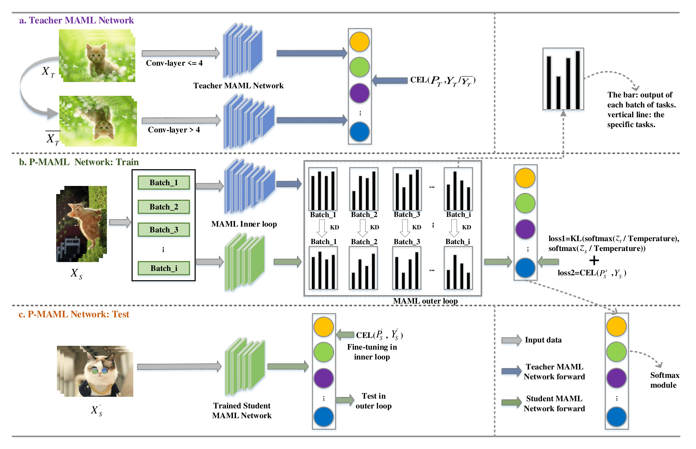
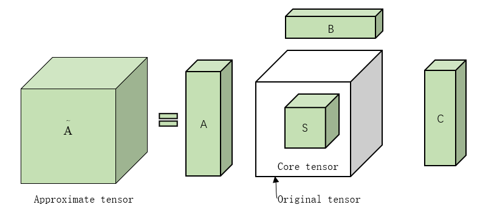
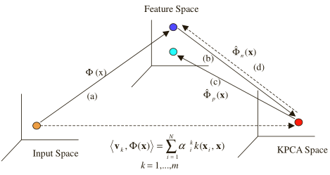
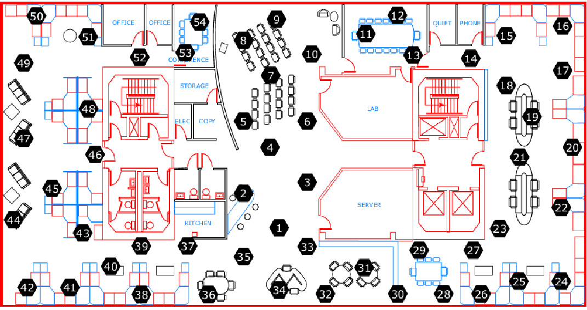
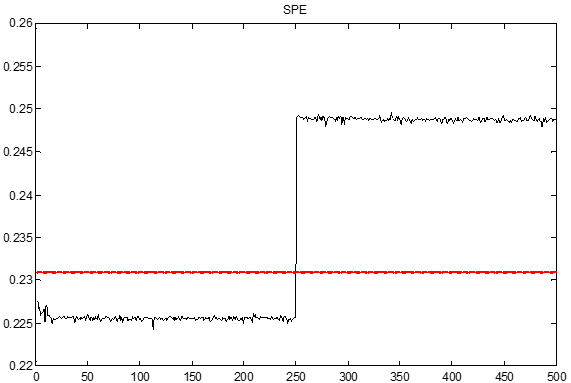

Min Zhang
 |
Min, Zhang |
Biography
I am a post graduate student from department of Electronics & Communication Engineering (ECE) at Tianjin Normal University (TJNU). My researches involve Multi-modal learning, tensor space, Multi-modal Fusion. Furthermore, I have broad interests in Few-shot learning and Meta-learning. In 2016.9, I joined TJNU ECE, where I was fortunate for having been directed by Prof.Wei Wang, and my research topics include tensor space, multi-modal fusion. Before this, I finished my undergraduate study in College Qingdao Agricultural University (HDXY), where my researches focused on automatic driving of photoelectrical smart car. Now, I am working as a research assistance in the Machine Intellignece Lab in SoE-Westlake university. I am fortunate to be supervised by Prof.Donglin Wang, and my research focuses on Few-shot learning algorithms for robotics.
News
- 06/08-12/2020: I will attend ECAI2020 and give a talk about our accepted paper.
- 01/15/2020: One paper is accpted by ECAI 2020. Our work on Few-shot Learning, whih provides a new analysis on Knowledge Distillation and MAML, is accepted.
- 07/14-16/2017: I attened CSPS 2017 and give a talk about our accpted paper.
- 03/15/2017: One paper is accpted by CSPS 2017.
Research interests
My research interests include Machine Learning and Computer Vision. Especially in,
Publications
|  |
Knowledge Distillation for Model-agnostic Meta-learning. |
 |
Classification of data stream in sensor network with small samples. |
|  | Tensor Deep Learning Model for Heterogeneous Data Fusion in Internet of Things. |
|  | Kernel PCA feature extraction and the SVM classification algorithm for multiple-status through-wall human being detection. |
|  | Research on Data Flow Partitioning Based on Dynamic Feature Extraction. |
 |
Dividing and Aggregating Network for Multi-view Action Recognition |
|  | Anomaly Detection Based on Kernel Principal Component and Principal Component Analysis. |
Services
Conference Reviewer:
- ECAI 2020.
Journal Reviewer:
- IEEE Internet of Things Journal (IOT)
- IEEE International Conference on Computer Vision and Pattern Recognition (TETCI)
- TEEE Access
Awards & Honors
- Outstanding Master's Degree Thesis Award, 2019
- China National Scholarship, 2016
- National Encouragement Scholarship, 2015
- Merit Student
- Professional Major Scholarship for seven years
Key Skill
- Python, Matlab, C++/C.
- Japanese & English.
- Cooperation and teamwork.